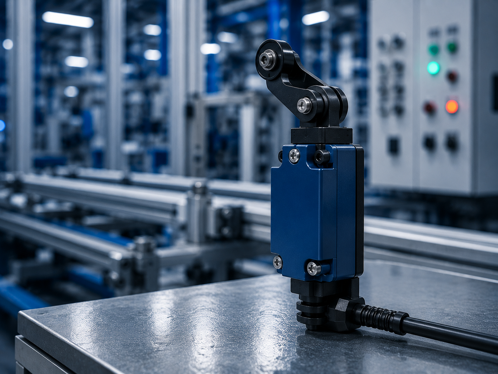
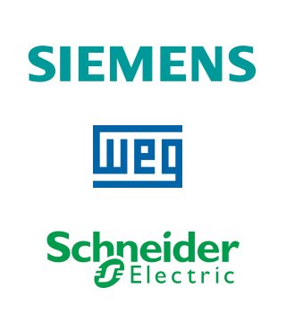

Sensor Fim de Curso
Dispositivo eletromecânico ou magnético usado para detectar a posição de uma peça ou o limite de um movimento.
Conceito e Aplicação
O sensor fim de curso é um dispositivo eletromecânico utilizado para detectar o limite de movimento de máquinas e equipamentos, realizando o acionamento ou desligamento de circuitos elétricos. É amplamente aplicado em sistemas de automação industrial, esteiras, portas automáticas e máquinas industriais para controle de posição, segurança e monitoramento de movimentos mecânicos.
- Detecta limites de movimento em máquinas;
- Utilizado em sistemas de automação industrial;
- Auxilia no controle e segurança operacional;
Informações Complementares



Empresas
As principais empresas que fabricam sensores fim de curso são referências no setor de automação industrial e dispositivos de controle. Em 2025, diversas marcas se destacam pela qualidade, precisão e confiabilidade de seus sensores industriais.
A Schneider Electric, a Siemens e a WEG são algumas das principais fabricantes de sensores fim de curso utilizados em máquinas e sistemas automatizados. Seus produtos são amplamente aplicados em processos industriais, sistemas de segurança e controle de posição.
SCHNEIDER ELECTRIC: Multinacional especializada em energia e automação industrial. Seus sensores fim de curso oferecem alta precisão e confiabilidade para aplicações industriais e sistemas automatizados.
SIEMENS: Empresa global de tecnologia e automação que desenvolve sensores industriais para controle de posição, monitoramento e segurança em máquinas e equipamentos.
WEG: Empresa brasileira reconhecida mundialmente pela fabricação de equipamentos elétricos e soluções industriais. Produz sensores e dispositivos para automação com foco em segurança, eficiência e durabilidade.
